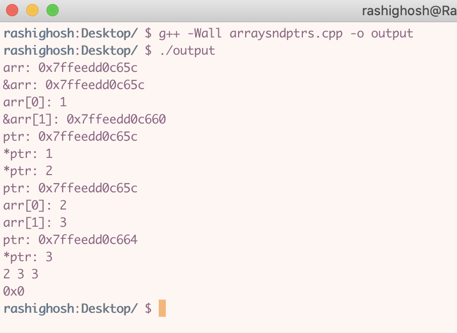

☆ note: you can skip this step if you already have a preferred text editor
1) i personally looooveeee VS Code. a lot of my friends and even people i worked with love it too! it has tons of useful helpful extensions to really customize your workflow. you can download it from here:
https://code.visualstudio.com/
☆ note: do NOT get just regular visual studio (it’s purple). that’s the IDE version, and has some serious weird drawbacks. it's DIFFERENT from VS Code -- it's BLUE. you want the BLUE one!
1) create a program in your text editor. save it somewhere easily accessible.
2) open up the terminal. (can command+spacebar and search for it). you get an interface that looks something like this:
☆ note: your's will probably look a bit different (white or black background), as i have clearly customized the look of mine (:
3) now we are going to learn some linux commands! here are the most helpful ones. the following screenshot is me navigating the terminal.
☆ PAUSE here and try it for yourself! navigate around your mac using these commands. you gotta do it yourself to get a feel for it!
4) now, to compile and run a c++ file, make sure you are in the same directory as the file. then run the following two commands:
g++ -Wall [filename].cpp -o output
./output
the first command compiles the program. this is where you will get errors & warnings (if any). the second runs the program. here’s me compiling & running a c++ file below:
as you can see on the first line, i compiled a file called “arraysndptrs.cpp”. i had no warnings or errors. then on the second line i ran the program, and it outputted in the terminal!
☆ if you are compiling multiple files (ex, a c++ main file and a class file) you MUST compile ALL .cpp files (NOT the .h files!); ie, g++ -Wall [main].cpp [class1].cpp -o output OR, if all these files are in the same folder, to automatically compile ALL c++ files, run g++ -Wall *.cpp -o output (my fav command)